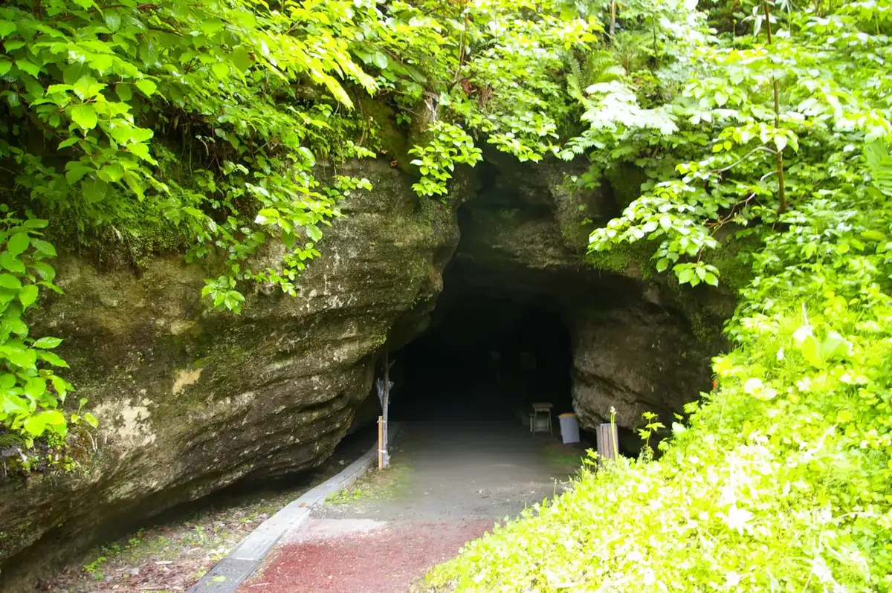
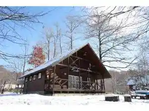
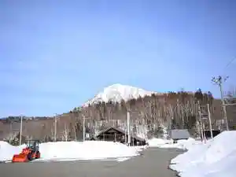
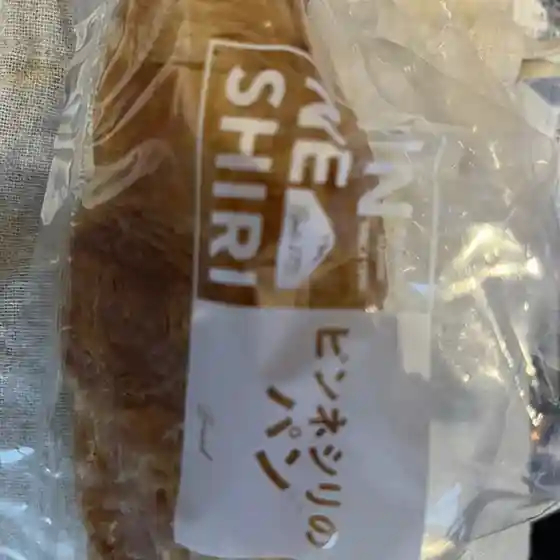
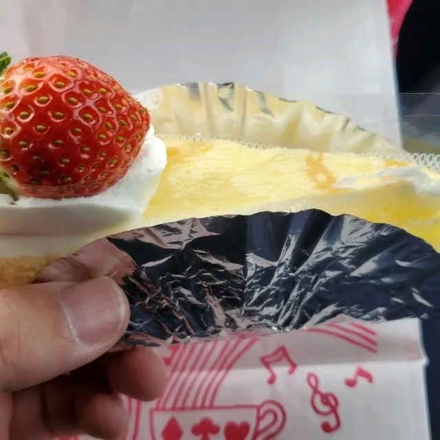
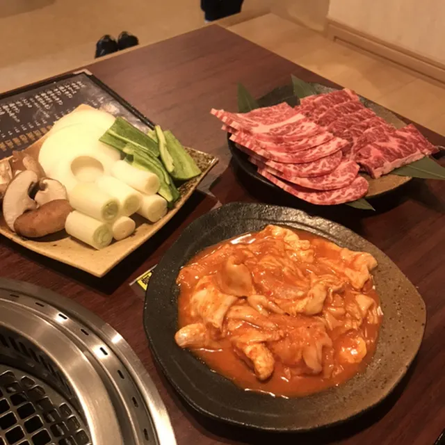
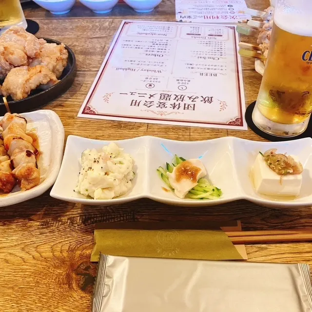
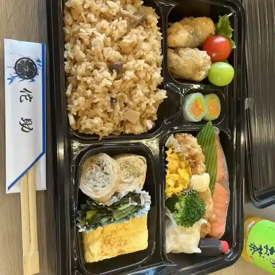
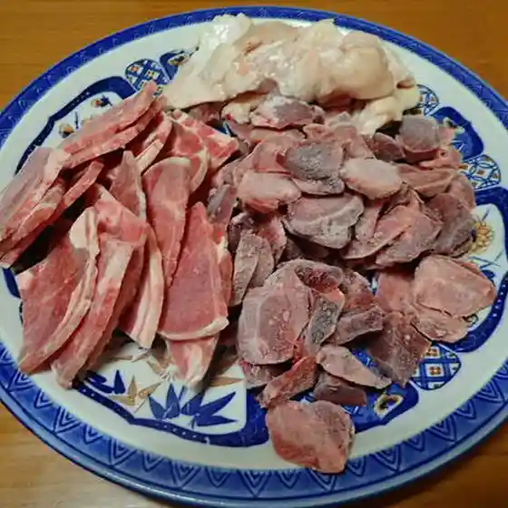
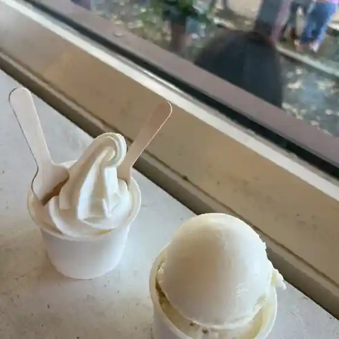

Japan / Hokkaido / Nakatonbetsu
Nakatonbetsu
Nakatonbetsu · Hokkaido
Nakatonbetsu
Highlighted on the Hokkaido map.

Stay
ピンネシリヴィレッジファームパーク

Pinneshirivirejjifaamupaaku
ピンネシリ温泉ホテル望岳荘

Pinneshiri Onsen Hoteru Bougaku Sou
Dining
ピンネシリ

Pinneshiri
八番食堂
Hachiban Shokudou
すずや菓子舗

Suzuya Kashi Ho
焼肉工房 和

Yakiniku Koubou Wa
オグバル

Ogubaru
佗助

Ta Jo
三ケ月

Mikagetsu
高橋牧場チーズ工房

Takahashi Bokujou Chiizu Koubou
里芋と蜂蜜
Satoimo To Hachimitsu
明月庵 田中屋
Meigetsu Iori Tanaka Ya
森のキッチンハル
Mori No Kitchinharu
食楽厨房 まるや
Shoku Raku Chuubou Maruya
焼肉ジャンボ
Yakiniku Janbo
チーナドゥ
Chiinadou
望岳荘
Bougaku Sou
旅館石川
Ryokan Ishikawa
コミレス・かふぇ・トントン
Komiresu Kafe Tonton
セイコーマート なかとんべつ店
Seikoomaato Nakatonbetsu Mise
ヤマフクコーヒー
Yamafukukoohii